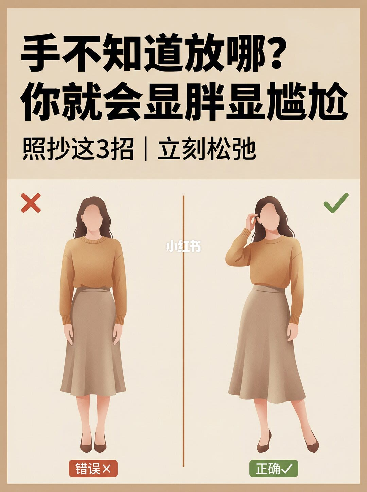
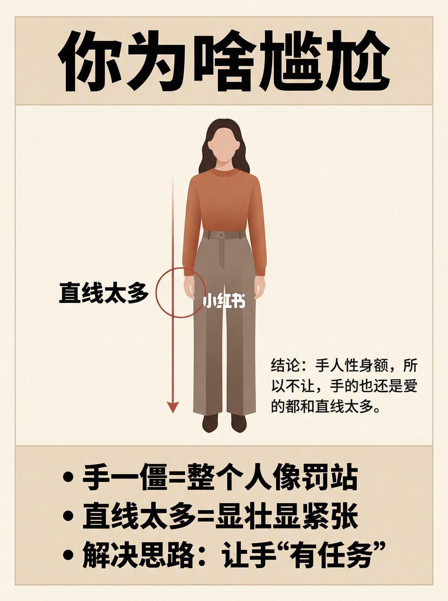
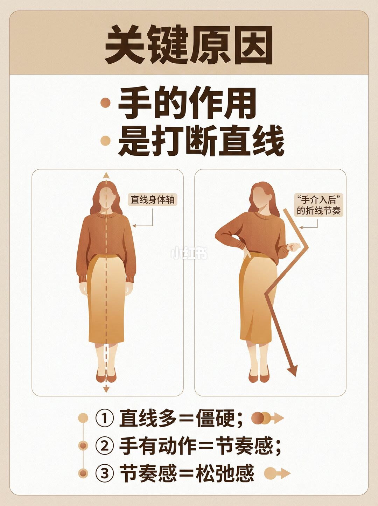
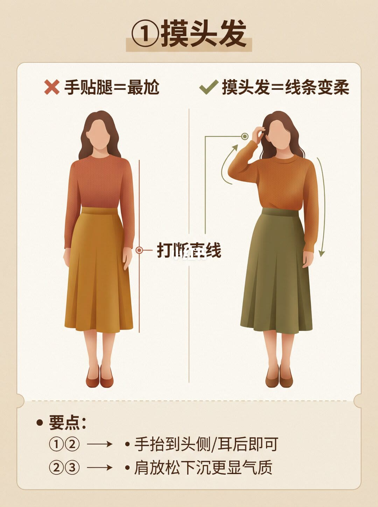
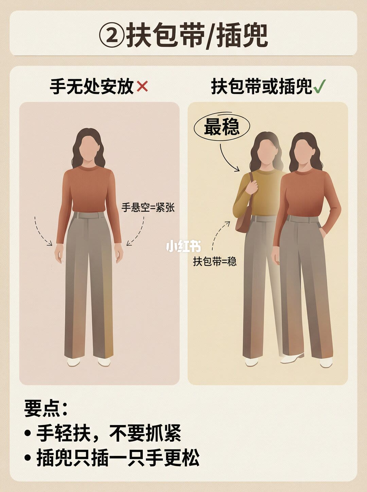
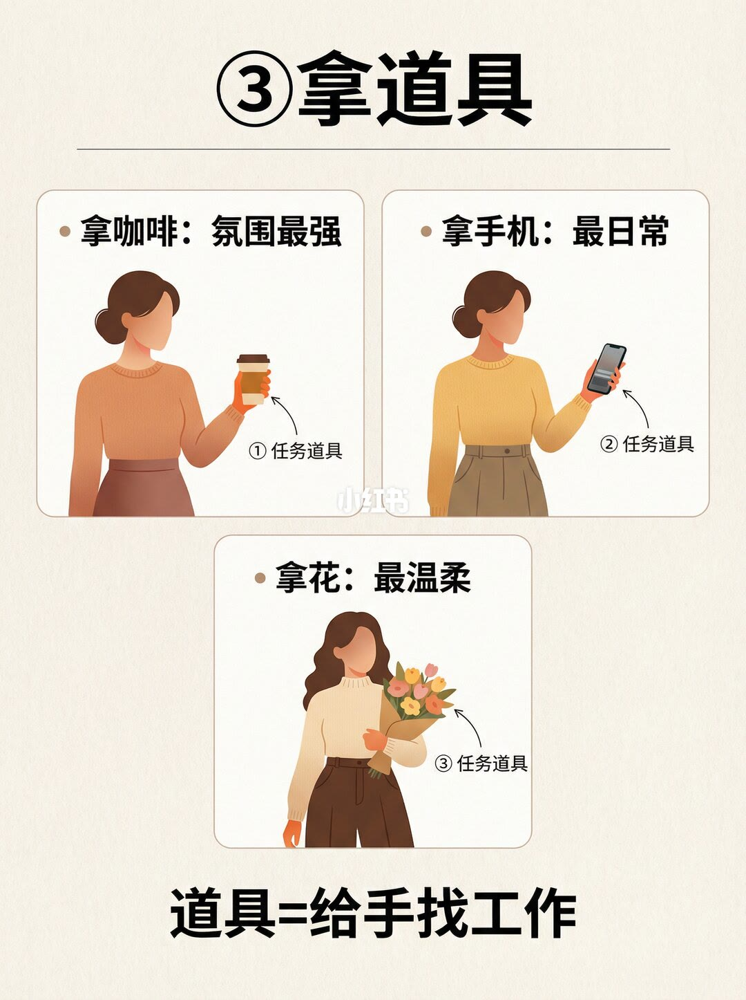
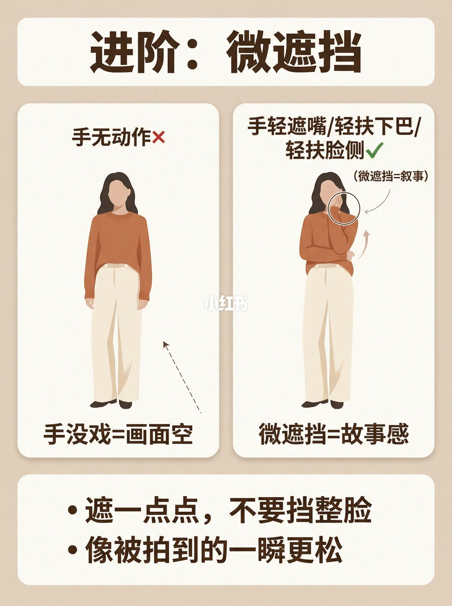
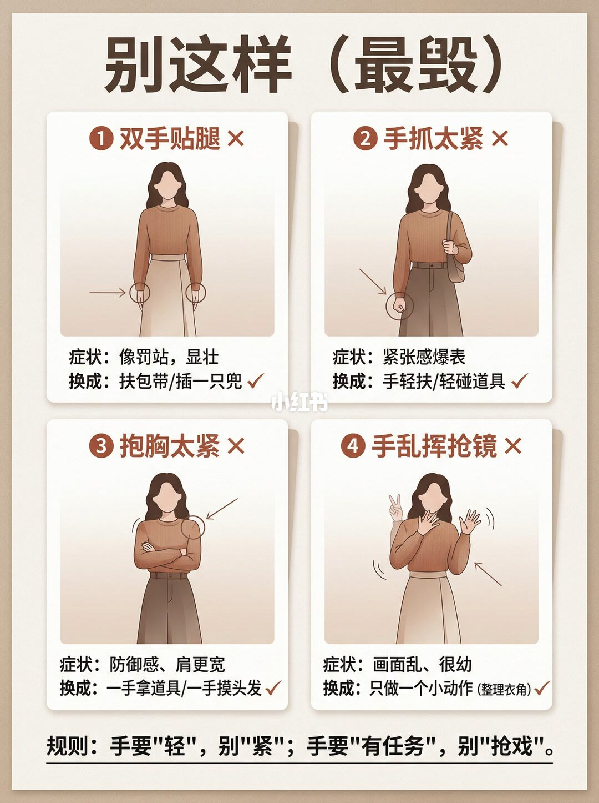
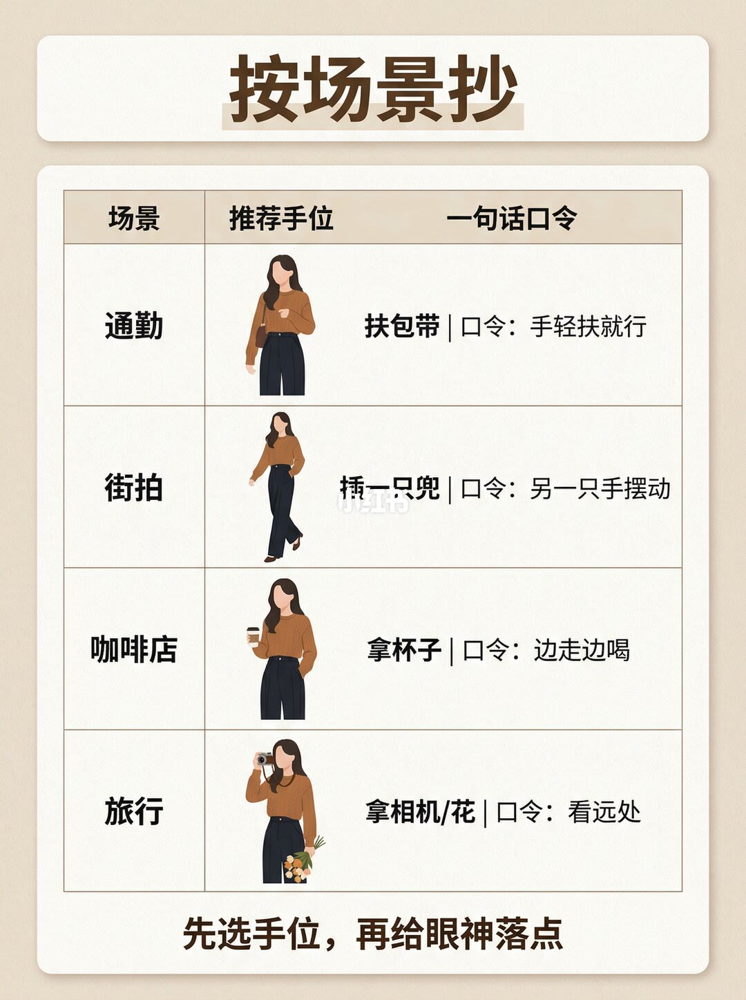
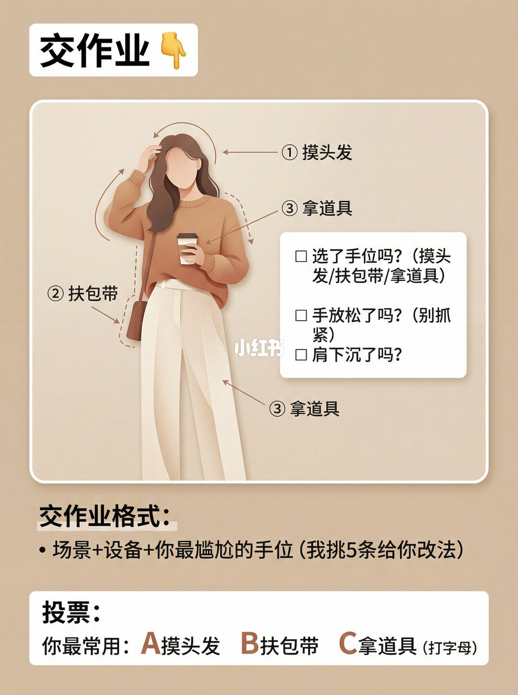

图文实录 · 小红书 · 爱拍照的七十(努力涨粉中)
拍照手一尴尬，整个人都垮
垮的不是脸，是手没有去处。图上把罚站式贴腿和乱摆抢镜都归成同一件事：手臂贴着身体，直线太多，人显壮、显紧张。作者给的一句逻辑是手要有任务，用来打断这条直线。闭眼能抄的三招是摸头发或耳后、扶包带或只插一只兜、拿咖啡、手机或花。
1/10
封面：贴腿和抬手并排
大标题是「手不知道放哪？你就会显胖显尴尬」。下一行是「照抄这3招｜立刻松弛」。左边红叉标「错误」，人站直，两臂贴身，两腿并拢。右边绿勾标「正确」，一只手摸到头发，另一只手臂弯开，一条腿向前侧出。两张都是色块剪影，棕上衣配浅色裙。封面只给总对比，三招从第 4 页才开始编号。中间有小红书水印。

2/10
你为啥尴尬
标题「你为啥尴尬」。中间是穿橙毛衣、浅色长裤的剪影，两臂垂下。一侧红圈加一条向下的长箭头，字是「直线太多」。页底三条：「手一僵 = 整个像罚站」「直线太多 = 显壮显紧张」「解决思路：让手“有任务”」。人物右侧还有一小段说明，字看不清，无法确认。

3/10
关键原因：手用来打断直线
标题「关键原因」，副题「手的作用是打断直线」。左边双臂贴身，一条虚线竖轴标「直线身体轴」。右边一只手叉在腰侧、另一只手臂弯起，外轮廓改成折线，标「手介入后」的折线节奏。页底三句：「直线多 = 僵硬」「手有动作 = 节奏感」「节奏感 = 松弛感」。这一页的对侧是叉腰加屈臂，还不是后面那三招。

4/10
① 摸头发
标题「①摸头发」。左边「手贴腿 = 最尬」，手臂外侧有一条竖线，旁边写着「打断直线」，像是在标出要打断的那条线。右边「摸头发 = 线条变柔」，手抬到头侧，弯箭头顺着新的外轮廓走。页底能读出的两句是：手抬到头侧或耳后即可；肩放松下沉更显气质。这两句前面的序号看不清，无法确认。

5/10
② 扶包带或插一只兜
标题「② 扶包带/插兜」。左边「手无处安放」，虚线指向垂着的手，字是「手悬空 = 紧张」。右边叠了两个剪影：一只手扶肩包带，圈着「最稳」，旁注「扶包带 = 稳」；另一只手插进裤兜。页底要点两句：「手轻扶，不要抓紧」「插兜只插一只手更松」。衣服是橙上衣配浅色长裤。

6/10
③ 拿道具
标题「③ 拿道具」。三格：拿咖啡，字是「氛围最强」；拿手机，字是「最日常」；拿花，字是「最温柔」。三处都标成「任务道具」。页底一句「道具 = 给手找工作」。咖啡、手机、花是三种气质，不是三种难度。

7/10
进阶：微遮挡
标题「进阶：微遮挡」。左边「手无动作」，下面写「手没戏 = 画面空」。右边手轻贴脸侧，圈里写「微遮挡 = 叙事」，标题列出轻遮嘴、轻扶下巴、轻扶脸侧，下面写「微遮挡 = 故事感」。页底两句：「遮一点点，不要挡整脸」「像被拍到的一瞬更轻松」。这一页不在封面那三招里。

8/10
别这样：四条最毁
标题「别这样（最毁）」，四格。双手贴腿，症状「像罚站，显壮」，换成扶包带或插一只兜。手抓太紧，拳头圈出来，症状「紧张感爆表」，换成手轻扶或轻碰道具。抱胸太紧，箭头指向肩，症状「防御感、肩更宽」，换成一手拿道具、一手摸头发。手乱挥抢镜，同一只手叠了好几个位置，症状「画面乱、很幼」，换成只做一个小动作，括号里的例子是整理衣角。页底规则：「手要“轻”，别“紧”；手要“有任务”，别“抢戏”。」

9/10
按场景抄
标题「按场景抄」。表有三列：场景、推荐手位、一句话口令。通勤：扶包带，口令「手轻扶就行」。街拍：插一只兜，口令「另一只手摆动」。咖啡店：拿杯子，口令「边走边喝」。旅行：拿相机或花，口令「看远处」。页底「先选手位，再给眼神落点」。四行都是走路或站着的剪影，没有坐下的对照。

10/10
交作业
标题「交作业」。剪影上标了「① 摸头发」「② 扶包带」「③ 拿道具」，手里还有一杯咖啡。图上「③」有两处指向，无法确认是不是同一只手的两个标签。旁边清单三条：选了手位吗（摸头发 / 扶包带 / 拿道具）；手放松了吗（别抓紧）；肩下沉了吗。交作业格式是「场景 + 设备 + 你最尴尬的手位」，作者写挑 5 条给改法。投票是最常用 A 摸头发、B 扶包带、C 拿道具，让人打字母。清单没有插兜、微遮挡和整理衣角。

汇总
手有一个任务，直线就被打断
结论：整个人垮，在这套图里是手臂贴出直线，人像罚站、显壮、显紧张。手要有一个任务：摸头侧或耳后、轻扶包带或只插一只兜、拿咖啡手机或花。支撑页是第 2 页到第 6 页；第 1 页是总对比，第 7 页是微遮挡进阶，第 8 页是四条替换，第 9 页按场景给口令，第 10 页只抽三招加放松和沉肩做自检。边界：全是色块剪影，衣服和裙子裤子在各页之间换过，不能当成同一次拍摄。第 2 页右侧小字、第 4 页要点序号、第 10 页重复的「③」看不清，无法确认。微遮挡不能挡整脸；插兜只插一只；乱挥时只留一个小动作。这不是体重变化，也不是所有体型的规则。